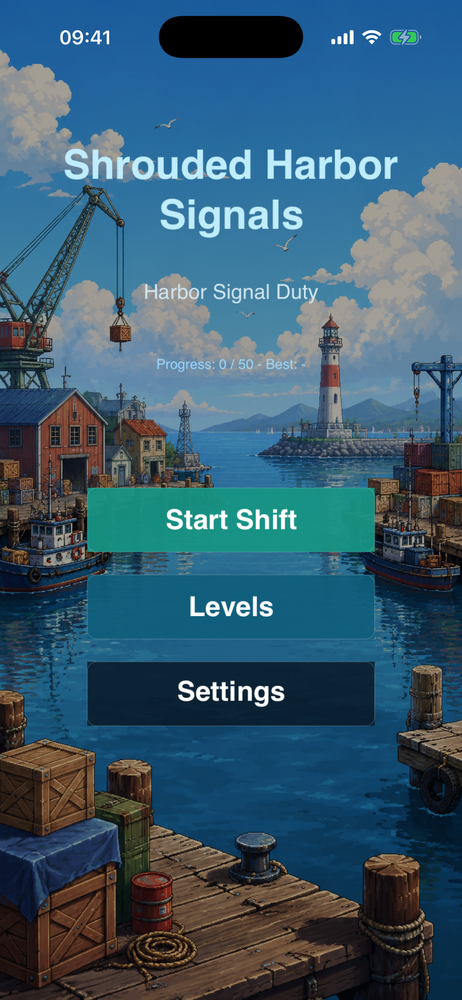
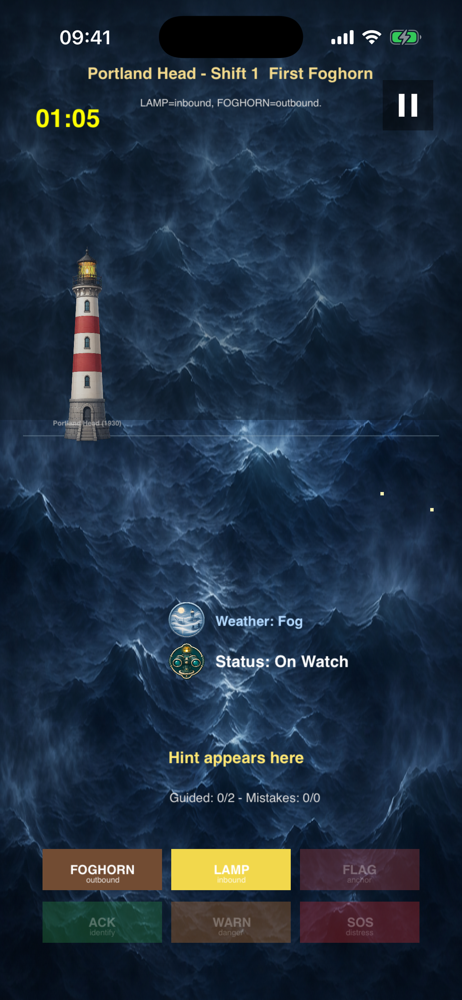
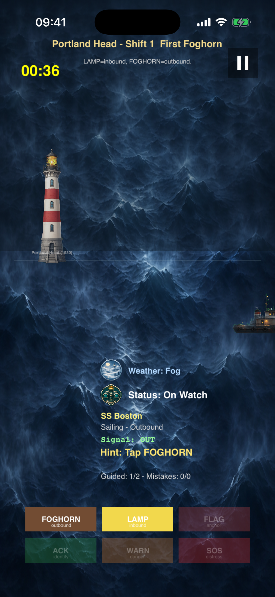
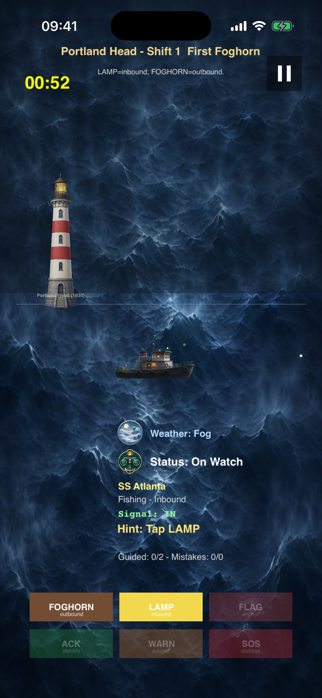
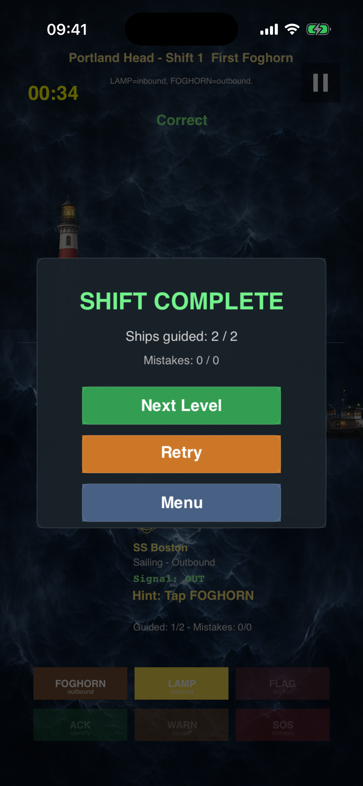

Shrouded Harbor Signals
Harbor Signal Duty
A foggy harbor signal duty game. Stand watch at five historic lighthouses along the Atlantic coast and guide ships safely through the mist using foghorns, lamps, flags, and distress signals.
Screenshots

Main Menu
Start your shift, browse 50 levels, or adjust settings.

On Watch
Read each ship's intent and reply with the correct signal.

Multiple Contacts
Manage several vessels before their patience runs out.

Storm Duty
Heavy rain, thunder, and blizzards reduce visibility.

Shift Complete
Guide all ships to safety before time or mistakes run out.
About Shrouded Harbor Signals
Shrouded Harbor Signals is an offline puzzle game built with SpriteKit. You play as a lighthouse keeper on the Atlantic coast, guiding ships through fog, rain, and storms by choosing the correct signal response for each vessel's intent.
Journey across five historic lighthouse stations — Portland Head, Boston Harbor, Cape Cod, Sandy Hook, and Cape Ray — spanning 50 night shifts from the 1930s to the 1960s. Each station introduces new equipment and harsher weather.
Every shift challenges you to read incoming ships, judge their intent (inbound, outbound, anchorage, distress, or unknown), and reply with the right signal before patience runs out. Manage your mistakes and guide all required ships to complete the shift.
How to Play
Tap a Ship
Touch any approaching vessel to focus on it. Its name, type, and intent appear in the HUD.
Read the Intent
Ships signal Inbound, Outbound, Anchorage, Distress, or Unknown. Match the correct reply.
Send a Signal
Tap one of six signal buttons: Foghorn, Lamp, Flag, Ack, Warn, or SOS.
Beat the Clock
Each ship has a patience timer. Reply correctly before it expires or lose a life.
Watch the Weather
Fog, rain, thunder, and blizzards lower visibility. Radar unlocks at Cape Cod.
Complete the Shift
Guide all required ships within the mistake limit to clear the level and unlock the next.
Support
How do I play?
Tap a ship to focus, read its intent, then tap the matching signal button. The first three levels are tutorials.
Does it need internet?
No. Shrouded Harbor Signals is fully offline. No accounts, no ads, no tracking.
Need help?
Visit the App Store product page for support contact after release.